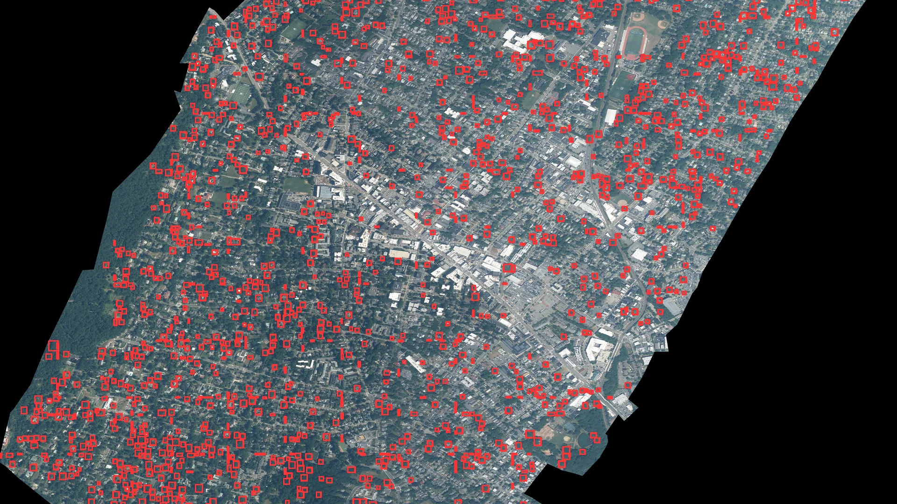

From a ZIP code to a tree map.
I used ZIP code 07042 in New Jersey as the starting point for turning high-resolution aerial imagery into georeferenced results. The pipeline proposed detections, checked each box against vegetation evidence and exported a map, coordinates and geometries ready for analysis.

One territorial query turned into four usable outputs.
The analysis produced an annotated image for visual inspection, a GeoJSON of georeferenced boxes, a coordinate CSV and a run summary. From 4,312 initial proposals, the filter retained 1,986 candidates with sufficient vegetation signal and removed 2,326 detections during quality control.
Preserve the geography after inferring in pixels.
Acquire the raster
The pipeline works with a NAIP mosaic at approximately 0.87 meters per pixel for the area defined by ZIP code 07042.
Detect by tiles
DeepForest processes 800-pixel patches with 25% overlap to reduce losses when a crown crosses an edge.
Transform coordinates
Rasterio converts xmin, ymin, xmax and ymax from pixels into the GeoTIFF CRS. GeoPandas reprojects the result to WGS84.
Export and inspect
The prototype writes a GeoJSON of boxes, a coordinate CSV and an image with every result drawn over the territory.
A small tool with separated responsibilities.
DeepForest as a starting point
The script integrates weecology/deepforest-tree to bring a specialized detector into a custom geospatial pipeline.
Georeference preserved
The transform is read from the input file so every box returns to geographic space instead of remaining trapped in image coordinates.
Interoperable GeoJSON
Boxes are saved as polygons with a score and normalized CRS, ready to explore and review in QGIS.
Annotated image
OpenCV draws rectangles and confidence scores over the raster to quickly review how the detector responded.
Block-based work
Tiling divides large rasters into manageable units and opens a direct route toward GPU processing.
From a detection to a map
The output combines location, geometry and confidence so each object can be filtered, visualized and connected to other territorial data.
From detection to new questions about the territory.
Once georeferenced, crowns can be crossed with neighborhoods, parcels, streets or other urban layers. The project turns an image that is difficult to analyze at scale into objects that can be counted, filtered, compared and reviewed.
Locate and count
The detections provide a starting point for covering large areas and organizing a review of visible trees.
Read spatial differences
The same structure makes it possible to compare density between zones or follow change when imagery from different dates is available.
Direct inspection
Scores and location help order where to review first and bring observations from the map back into the dataset.
A foundation for experimenting with vision and territory.
- Scale to new geographies: the pipeline can connect to other image sources with compatible resolution and licensing.
- Measure performance: a labeled set would enable comparisons of precision, recall and IoU by scene type.
- Refine geometries: rectangular detection can evolve toward segmentation to estimate each crown’s shape and coverage.
- Accelerate large areas: GPU processing, resumption and tile queues open the path toward larger runs.
- Expand outputs: GeoJSON, annotated images and future tabular formats can integrate with dashboards, maps and analytical workflows.